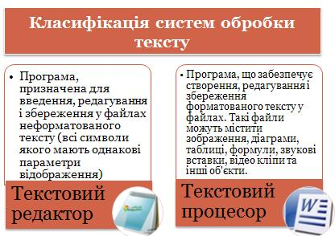
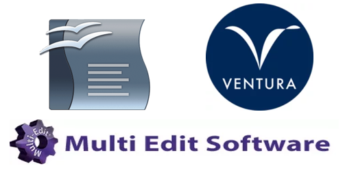

Класифікація текстового редактора
Сучасний текстовий редактор - це програмний продукт, що забезпечує користувача ПК засобами створення, обробки та збереження документів різного ступеня складності. Текстовий редактор дозволяє робити все те, що може робити друкарка за допомогою гарної друкарської машинки. Але, крім традиційних можливостей, ПК дозволяє здійснювати якісно нові способи обробки текстових документів: вставку повторюваних фрагментів, зміну довжини рядків, автоматичний перенос слів, виділення потрібних частин тексту нестандартним шрифтом при друці й інші. Можливість попереднього перегляду отриманого документа на екрані дисплея допомагає уникнути непродуктивних витрат праці та паперу при друці.
Велике розмаїття типів документів призвело до значної кількості існуючих текстових редакторів.
За типом оброблюваного документа текстові редактори класифікують так:
Загальна тенденція в розвитку текстових редакторів полягає у створенні редакторів, які дозволяють користувачам одночасно працювати з текстами, що містять об'єкти і фрагменти різної природи. Особливо чітко це прослідковується в редакторах документів. Як правило, вихідним моментом роботи з документом є текст, до якого додаються об'єкти і фрагменти різної природи, наприклад діаграми, таблиці і т.д.
Ще до поширення операційної системи Windows створювалося чимало програм для роботи з текстом. Серед них були як найпростіші текстові редактори, скажімо R1 чи MS-DOS Editor, так і складніші — Лексикон, MultiEdit та ChiWriter, які можна вважати текстовими процесорами початкового рівня. Існували навіть видавничі системи, як-от Ventura for DOS. Однак навіть найскладніші з них не підтримували повністю принцип WYSIWYG. Інтерфейс програм містив порівняно небагато команд використання діалогових вікон було зведено до мінімуму, а про панелі інструментів, області завдань, колірні палітри можна було лише мріяти.
До загальних функцій, що можуть бути реалізовані ТР, можна віднести такі:
ТР класифікують за кількома ознаками. До основних з них відносять такі:
За кількістю алфавітів, що використовують одночасно, розрізняють одно- та багатоалфавітні системи. Одноалфавітні системи допускають одночасну роботу з текстом тільки однією мовою. Найчастіше їх використовують в операційних системах та оболонках. У багатоалфавітних системах робота може одночасно вестись різними мовами. Однак робота з ієрогліфічними текстами (китайським, японським), а також з текстами деякими іншими мовами (наприклад, арабською, яка допускає введення символів справа наліво) досить важка.
За формою подання тексту системи поділяють на лінійні та нелінійні. В лінійних системах подають тільки «чистий» текст, або текст, що зображують символами використовуваних алфавітів і синтаксичними знаками. Такі системи не допускають індексів, показників степеня, математичних формул тощо. У нелінійних системах крім алфавіту, синтаксичних знаків і символів псевдографіки використовують ще широкий набір спеціальних знаків, наприклад, інтеграла, квадратного кореня, символи для побудови малюнків тощо. Нелінійні системи допускають запис «багатоповерхових» математичних виразів, індексів, складних малюнків тощо.
За пособом використання системи можна розділити на автономні та мережні. Автономні системи використовує кожен користувач окремо для розв’язування своїх специфічних задач. Текстова інформація в таких системах є індивідуальною. Мережні системи використовують підприємства, установи, контори, фірми. Текстову інформацію можна передавати локальною мережею, тобто вона доступна багатьом користувачам. Право внесення змін у той чи інший документ може відбуватися за спеціальними паролями, присвоєними користувачам. Ці системи скорочують паперовий документообіг.
За призначенням ТР доцільно розділити на системи загального та спеціального призначення. Системи загального призначення орієнтовані на широке коло користувачів, вони прості у роботі і не потребують спеціальних знань. До систем спеціального призначення перш за все треба віднести системи, орієнтовані на роботу з науковим текстом, а також видавничі системи. Робота з такими системами потребує спеціальної підготовки.